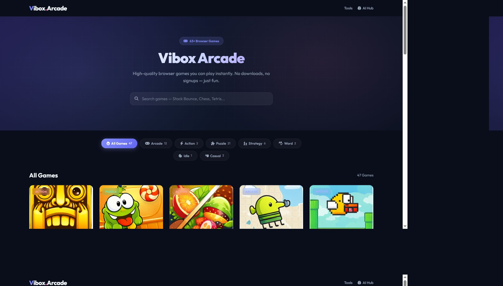
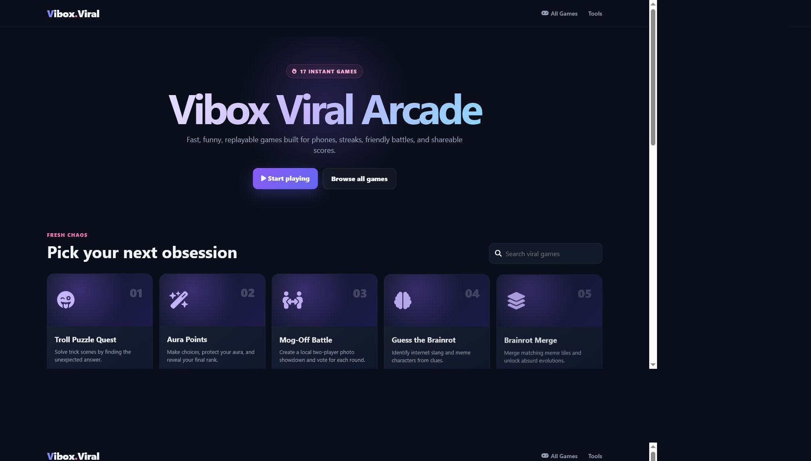

<!doctype html><meta charset="utf-8"><style>body{margin:0;background:#020617;color:white;font:700 14px system-ui;display:grid;grid-template-columns:1fr 1fr;gap:12px;padding:12px}figure{margin:0}figcaption{padding-bottom:8px}img{display:block;width:100%;border:1px solid #334155}</style><figure><figcaption>Existing Vibox Arcade — source system</figcaption></figure><figure><figcaption>Vibox Viral Arcade — implementation</figcaption></figure>
